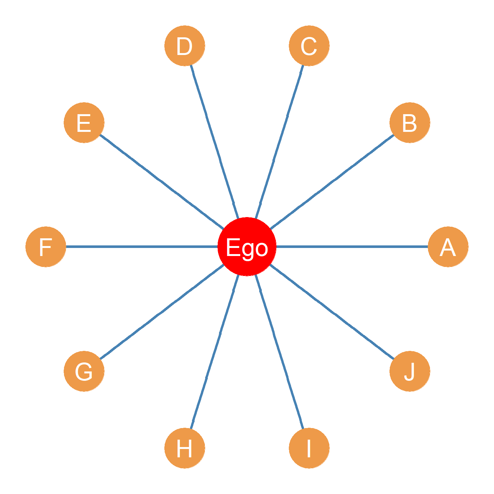
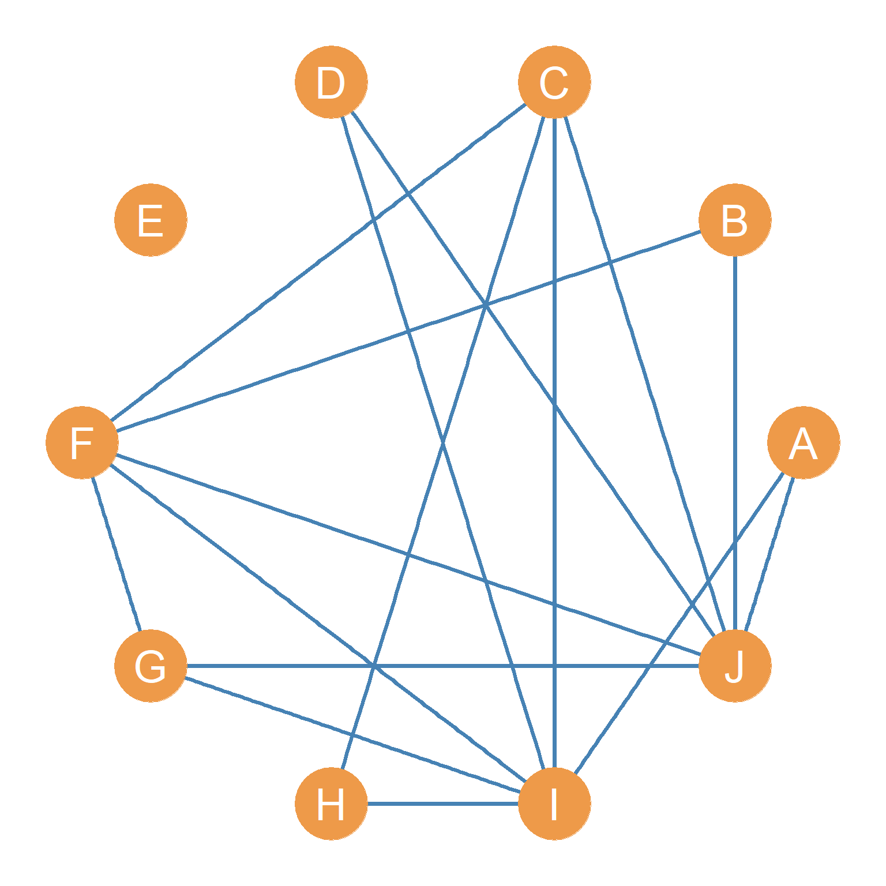
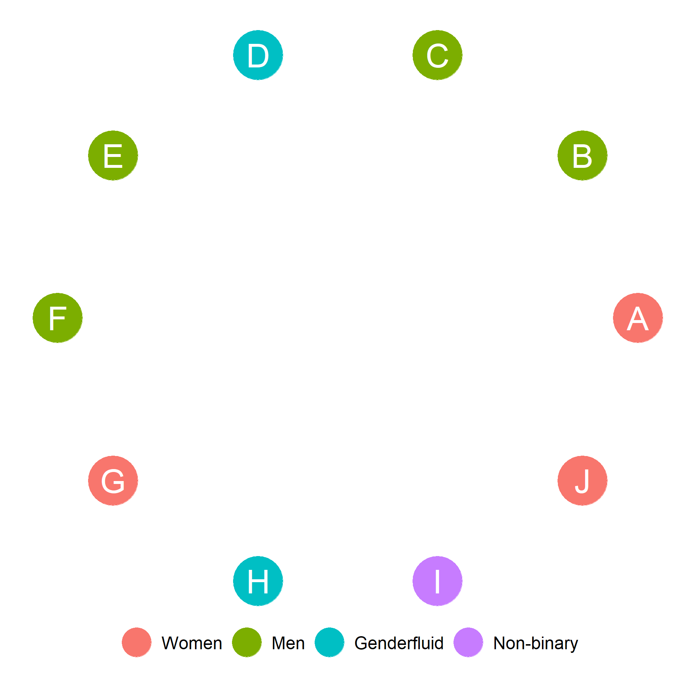
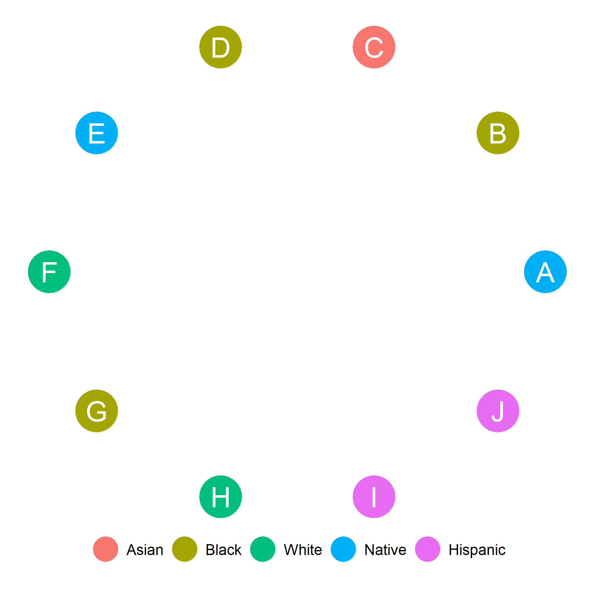
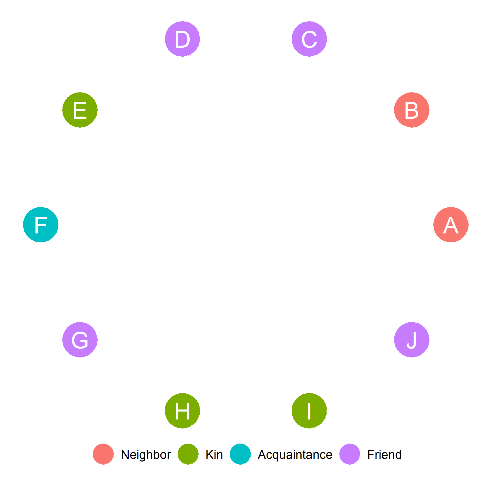

Homework VII: Ego-Network Metrics
Size, Effective Size, and Clustering


Consider Figure 1 (a). This shows the ego-to-alter ties in a hypothetical ego-network.
Consider Figure 1 (b). This shows the alter-to-alter ties in the hypothetical ego-network shown in Figure 1 (a).
- What is the size of ego’s network?
ANSWER: 10
- What is the effective size of ego’s network?
ANSWER: 6.8
- What is ego’s clustering coefficient?
ANSWER: 0.356
Composition, Diversity, and Homophily




Figure 2 (a)-Figure 2 (d) show some sociodemographic and role-relational characteristics of alters in ego’s network. Ego is a UCLA student who identifies as Black and as a Man. Using this information:
- Compute Ego’s EI homophily index with respect to gender identity.
ANSWER: 0.2
- Compute Ego’s EI homophily index with respect to Ethnoracial identification.
ANSWER: 0.4
- Compute the proportion of neighbors in Ego’s network.
ANSWER: 0.3
- Compute the proportion of people who identify as Hispanic in Ego’s network.
ANSWER: 0.2
- Compute the proportion of people with a high school degree in Ego’s network.
ANSWER: 0.5
- Compute the diversity of Ego’s Network with respect to ethnoracial identity.
ANSWER: 0.78
- Compute the diversity of Ego’s Network with respect to education.
ANSWER: 0.66
- Compute the diversity of Ego’s Network with respect to gender identity.
ANSWER: 0.7
- Does ego have a stronger same-group preference with respect to race than with respect to gender? (Yes/No, show your reasoning)
ANSWER: No (Gender EI = 0.2, versus Race EI = 0.4)
- Is the diversity of ego’s network larger when it comes to race than when it comes to education (Yes/No, show your reasoning)
ANSWER: Yes (Race H = 0.78, versus Education H = 0.66)
- What is the proportion of ego’s network composed of friends who are also Women?
ANSWER: 0.2
- Compute the proportion of people who identify as either Men or Women in ego’s network.
ANSWER: 0.7